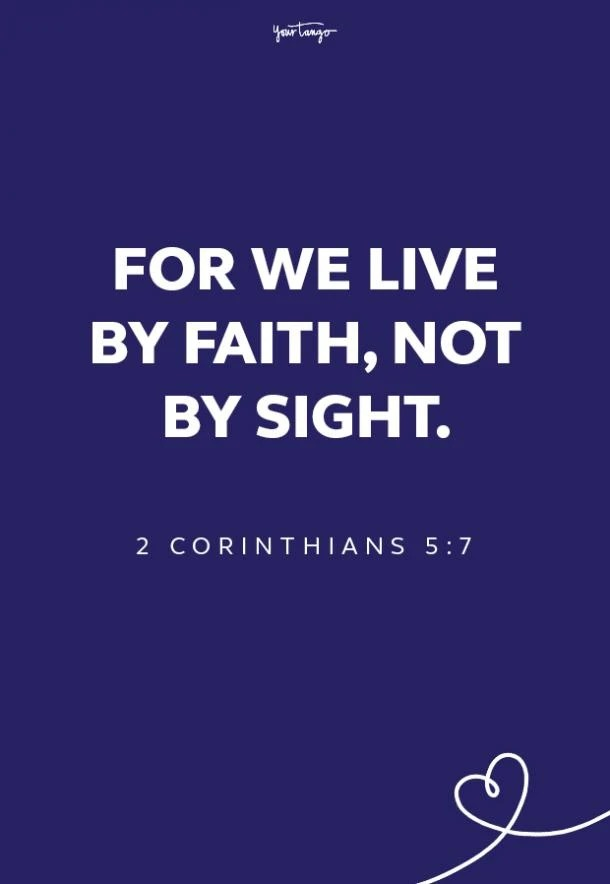
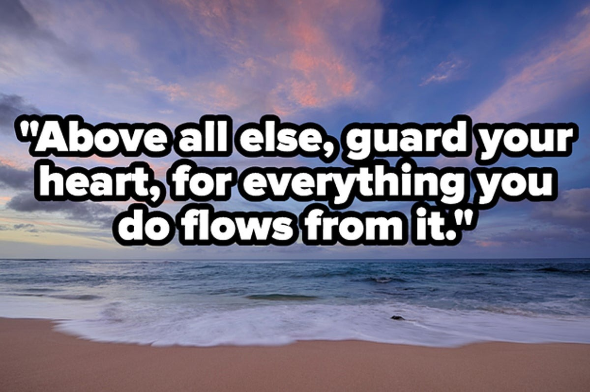

"In NYI (Nazarene Youth International),
we prioritize three fundamental
strategies: evangelism, discipleship, and
leadership development, often referred
to as 'BE, DO, and GO'. These strategies
form the essence of our identity and
mission, shaping our message and
guiding our actions. Through
evangelism, we share the
transformative message of Christ's love.
In discipleship, we nurture spiritual
growth and maturity in our youth.
Through leadership development, we
empower young leaders to impact their
communities for Christ. Together, these
strategies from the very fabric of
Nazarene Youth International, guiding
our efforts to fulfill our mission and
reach the world for Christ."
SDMI
The mission of SDMI (Sunday School
and Discipleship Ministries
International) is to fulfill the Great
Commision by guiding children, youth,
and adults towards a lifetime of
Christian holiness. Specifically focusing
on children, SDMI aims to provide
environments where they can encounter
Christ's love, deepen their
understanding of the Bible, and develop
a personal relationship with Jesus.
Grounded in the belief that every child
is cherished by God, SDMI endeavors to
create nurturing spaces where children
are welcomed to come to Christ freely,
echoing Jesus' words in Matthew 19:14:
"Let the little children come to me, and
do not hinder them, for the kingdom of
heaven belongs to such as these."
Baptism symbolizes spiritual renewal
and commitment to Christ, publicly
declaring faith and embracing
forgiveness. Through baptism,
individuals are cleansed of skin, rising to
new life in Christ by the power of the
Holy Spirit. It marks the beginning of a
journey of discipleship, living in
obedience to God's teachings. Baptism
fosters unity within the church
community, as believers celebrate each
other's faith journeys...


NYI
In Evangelism, we are called to BE God's light in
the dark and ignored places of our world. We are
to BE a faithful example of God's unconditional
love. In BEING in Christ and BEING with others, we
allow the Holy Spirit to work through our lives and
we trust God with the results.
Through Discipleship, we journey together with
other believers as we follow in the footsteps of
Jesus. As we DO life together, we learn what it
means to talk together, serve together, sacrifice
together, fall and get back up together. We DO the
hard work of becoming more like our Savior, living
surrendered lives in community.
In Leadership Development, we challenge and
empower youth and their leaders to GO out into
their communities as models of Christ's servant
leadership. We cannot afford to wait until we think
we know enough; we must GO now, learning along
the way.